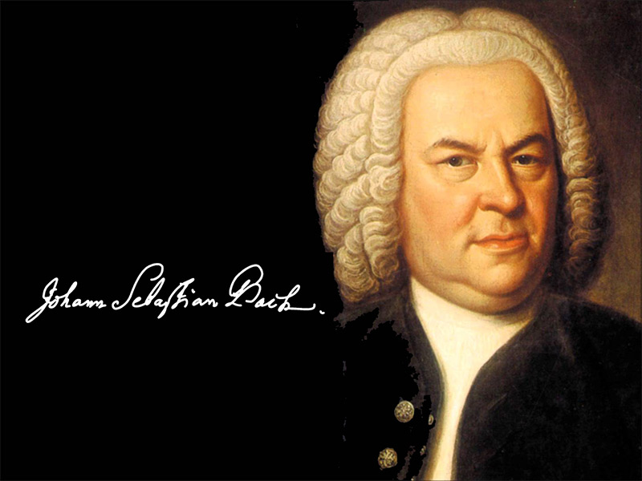
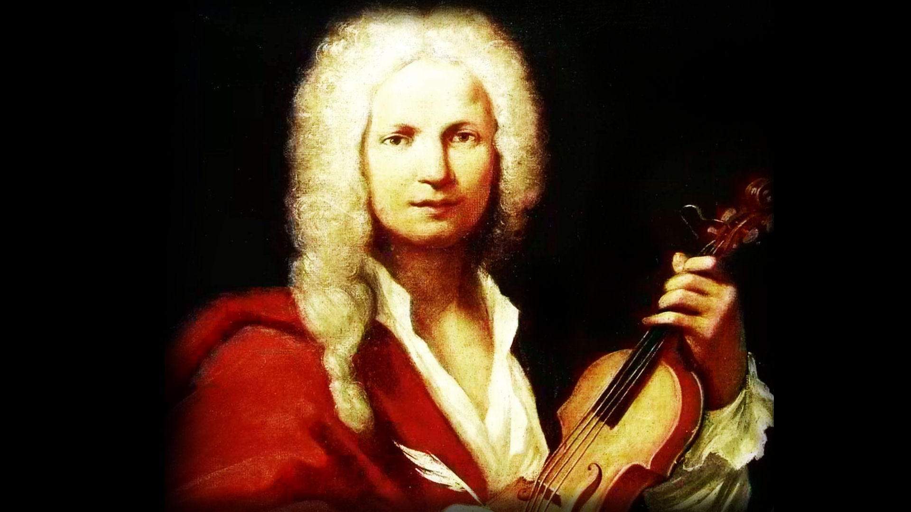

1.
Wolfgang Amadeus Mozart
Austria
Al primo posto della lista non poteva altro esserci che il musicista più divino della storia della musica: Mozart. Famosa al riguardo è la frase di Rossini quando gli chiesero chi fosse il suo compositore preferito, lui infatti rispose Beethoven, tutti ne rimasero basiti e addirittura qualcuno osò chiedere: “e Mozart maestro?” Lui rispose: “Mozart è la musica”. Primo musicista “freelance” (come diremmo oggi), infatti fu il primo a staccarsi dalle corti e comporre da libero professionista, si ricorda per essere anche il collante tra Neoclassicismo e Romanticismo musicale. Di sicuro le mie composizioni preferite sono i concerti per pianoforte ed orchestra, in particolare i n.15, 17, 20, 24, 25.
Il Divino
2.
Johann Sebastian Bach
Germania
Per apprezzare Bach serve amare - in un certo senso - la matematica, il rigore e il formalismo. L’impostazione stilistica di Bach si rifà molto alla scuola antica del contrappunto e della polifonia, ma le amplia ed esplora perdutamente in tutte le sue composizioni. In particolar modo si ricorda la sua grande composizione/trattato “Die Kunst der Fuge”, le numerose cantate e le stupende composizioni per organo. Indubbiamente la sua formazione religiosa ha influito molto sul suo stile, i suoi gusti musicali e la tecnica compositiva. Non scrisse mai Opere teatrali, ma compose numerosi oratori religiosi e profani. Da menzionare tra tutti la Passione secondo Matteo e la Passione secondo Giovanni.
Der Thomaskantor

3.
Georg Friedrich Händel
Germania/Inghilterra
Eterno rivale del coetaneo e coevo Bach, visse la maggior parte della sua vita alla corte inglese. Ciò ha segnato molto il suo stile rendendolo molto più “easy-listening” di Bach, tuttavia ciò non deprezza l’inestimabile valore delle sue opere. Mentre Bach rappresenta l’anima mistica del barocco, raccolta in una pietà devota, volta a perfezionare fino all’estremo, attraverso un lavoro paziente, tenace e silenzioso l’arte e le forme del passato – polifonia, contrappunto, fuga – , Handel rappresenta invece l’anima realistica, esuberante, affacciata nel presente e avida di novità, di modernismo – omofonia, melodramma, concerto – e di successo. Da ricordare soprattutto i Concerti Grossi op.3 - op.6 e le varie Cantate, Oratori e Opere Serie.
'The Great Bear'
4.
Ralph Vaughan Williams
Inghilterra
La musica di Vaughan Williams è stata spesso descritta come tipicamente inglese, come quella di Gustav Holst, Frederick Delius, George Butterworth e William Walton. Se questa musica dal forte spirito inglese potesse essere riassunta a parole, esse sarebbero probabilmente: all'apparenza familiare e banale, ma in realtà profonda e mistica, così come lirica, melodica, malinconica, nostalgica eppure senza tempo. Nello stile di Vaughan Williams: non si è mai del tutto sicuri che si stia ascoltando un qualcosa di molto vecchio oppure un qualcosa di molto moderno. Il suo stile esprime un grande apprezzamento e interesse nei confronti delle melodie popolari. Con le variazioni su questi tunes Vaughan Williams conduce l'ascoltatore dalla dimensione terrena (a cui il compositore tendeva a mantenersi legato nella sua vita quotidiana) a quella eterea e ultraterrena. Allo stesso tempo la sua musica evidenzia, in maniera molto velata e sottile, il sentimento patriottico nei confronti della natia Inghilterra, generato dal gusto per paesaggi arcaici e per l'intensa risposta emotiva che essi evocano nell'animo degli osservatori. I suoi primi lavori mostrano talvolta l'influenza di Ravel, suo maestro per tre mesi a Parigi (nel 1908). Ravel descrisse Vaughan Williams come l'unico dei suoi alunni che non componesse musica uguale a quella del maestro.
‘A nonconformist with a conservative’s regard for tradition’
5.
Antonio Vivaldi
Italia
Innovando dal profondo la musica dell'epoca, Vivaldi diede più evidenza alla struttura formale e ritmica del concerto, cercando ripetutamente contrasti armonici e inventando temi e melodie inconsuete. Il suo talento consisteva nel comporre una musica non accademica, chiara ed espressiva, tale da poter essere apprezzata dal grande pubblico e non solo da una minoranza di specialisti. La sua musica ebbe infatti un notevole influsso sullo stile di diversi compositori sia austriaci che tedeschi. Tra questi il più noto fu il celebre Johann Sebastian Bach, il quale fu grandemente influenzato dalla forma del concerto vivaldiano: egli interiorizzò a tal punto alcuni concerti vivaldiani da volerli trascrivere per organo, per clavicembalo solista o per uno o più clavicembali e orchestra, tra questi il famoso Concerto per quattro violini, archi e clavicembalo op. 3 n. 10 (RV 580). In Italia, nonostante avesse fortemente influenzato e rinnovato la musica strumentale dell'epoca, fu praticamente ignorato dagli studiosi coevi e i suoi lavori teatrali dopo la sua morte caddero nell'oblio più totale; questo a causa della moda in voga nell'Italia del Settecento, dove si esigevano sempre nuovi autori e nuove musiche. Vivaldi è considerato uno dei maestri della scuola barocca italiana, basata sui forti contrasti sonori e sulle armonie semplici e suggestive. Praticamente dimenticato durante la stagione del Classicismo, incontrò il gusto dei musicisti del tardo Romanticismo e dei primi del Novecento.
'Il Prete Rosso'
